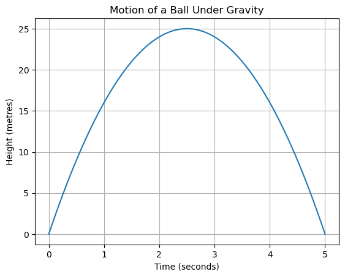

Unit 3: The Physicist#
Learning Outcomes#
Identifying the components of a quadratic equation used to describe motion.
Interpreting the physical meaning of roots and maximum points in equations of motion.
Applying quadratic equations to determine time, height, and key events in motion.
Analysing motion by linking mathematical solutions to real physical situations.
Introduction#
In earlier units, you learned how data can be modelled using equations. In Physics, equations are not chosen only because they fit data well. They are chosen because they describe how nature works.
Motion under gravity is one such case. When an object is thrown upward or dropped, its motion follows a predictable mathematical form. In this unit, you will work with a quadratic equation that represents motion and focus on understanding what the equation tells us about the physical situation.
Special Note Indian astronomers carefully studied motion of celestial bodies using mathematics. Texts from the Aryabhata and Bhaskara traditions analysed motion, time, and change using equations that relate position to time, ideas closely connected to modern equations of motion.
Here, you are not discovering the model. You are learning to interpret it, just as a physicist does.
Activity 3.1: Height of an Object Under Gravity#
In Physics, the motion of an object under gravity is often described directly using an equation. Suppose the height of a ball above the ground, measured in metres, at time t seconds is given by:
This equation already tells us how height \(h\) changes with time \(t\). This equation describes the complete motion of the ball after it is thrown upwards.
Let us visualise this equation to understand the motion it represents.
import numpy as np
import matplotlib.pyplot as plt
t = np.linspace(0, 5, 100)
h = -4 * t**2 + 20 * t
plt.plot(t, h)
plt.xlabel("Time (seconds)")
plt.ylabel("Height (metres)")
plt.title("Motion of a Ball Under Gravity")
plt.grid(True)
plt.show()

The curve shows the ball rising, slowing down, stopping momentarily, and then falling back to the ground.
Activity 3.2: Finding When the Ball Is on the Ground#
In Physics, an object is on the ground when its height is zero. To find when this happens, we find the values of t for which \(h(t) = 0\).
Learning Note The values of \(t\) for which a quadratic expression becomes zero are called its roots. In Physics, roots often represent important events in time.
Let us find the roots of the equation.
coefficients = [-4, 20, 0]
roots = np.roots(coefficients)
roots
array([5., 0.])
You will see two values. One root corresponds to the moment the ball is thrown from the ground. The other root represents the time when the ball returns to the ground.
These are not just mathematical solutions. They describe real physical moments.
Learning Note
The function
numpy.rootsis used to find the values for which a polynomial becomes zero. In other words, it helps us find the roots of an equation.We give
numpy.rootsa list of coefficients of the polynomial. For example, the equation
−4t² + 20t = 0
has coefficients[-4, 20, 0].The function then returns the values of t that make the height zero. In Physics, these roots represent important moments, such as when the object is on the ground.
Activity 3.3: Interpreting the Maximum Height#
The highest point of the motion occurs at the vertex of the parabola. This is the moment when the ball stops rising and starts falling.
The time at which this happens is given by:
a, b, c = -4, 20, 0
time_max = -b / (2 * a)
height_max = -4 * time_max**2 + 20 * time_max
time_max, height_max
(2.5, 25.0)
This tells us:
when the ball reaches its maximum height
how high the ball goes
In Physics, this moment is important because the velocity becomes zero at the highest point.
Activity 3.4: Using the Equation to Make Predictions#
Once we trust the equation, we can use it to predict the height of the ball at any time during its motion.
For example, let us find the height at 1.5 seconds.
t_new = 1.5
h_new = -4 * t_new**2 + 20 * t_new
h_new
21.0
This value is a prediction made using the physical model. Physicists use such equations to predict motion even when direct measurement is difficult.
Practice Tasks#
Try the following tasks carefully.
Use the equation to find the height of the ball at 2.5 seconds.
t = 2.5
-4 * t**2 + 20 * t
25.0
Find the time when the ball reaches a height of 16 metres.
Hint: Solve \(−4t^2 + 20t = 16\).
np.roots([-4, 20, -16])
array([4., 1.])
Explain which root represents the landing of the ball and why.
The larger root represents the time when the ball returns to the ground because it occurs after the motion has progressed forward in time.
Compare the maximum height with the heights at 1 second and 3 seconds.
h1 = -4 * 1**2 + 20 * 1
h3 = -4 * 3**2 + 20 * 3
height_max
h1, height_max, h3
(16, 25.0, 24)
Explain why quadratic equations are suitable for describing motion under gravity.
Hint: Quadratic equations are suitable because gravity produces constant acceleration, which leads to curved motion that cannot be represented by a straight line.
Reflection (Optional)#
In this unit, you acted like a physicist by interpreting an equation rather than merely solving it. You saw how roots, maximum points, and predictions all have clear physical meaning.
Reflect on the following questions:
How did the equation help you understand the motion
What physical events do the roots represent
Why is the maximum height important in studying motion
How does mathematics help physicists make reliable predictions